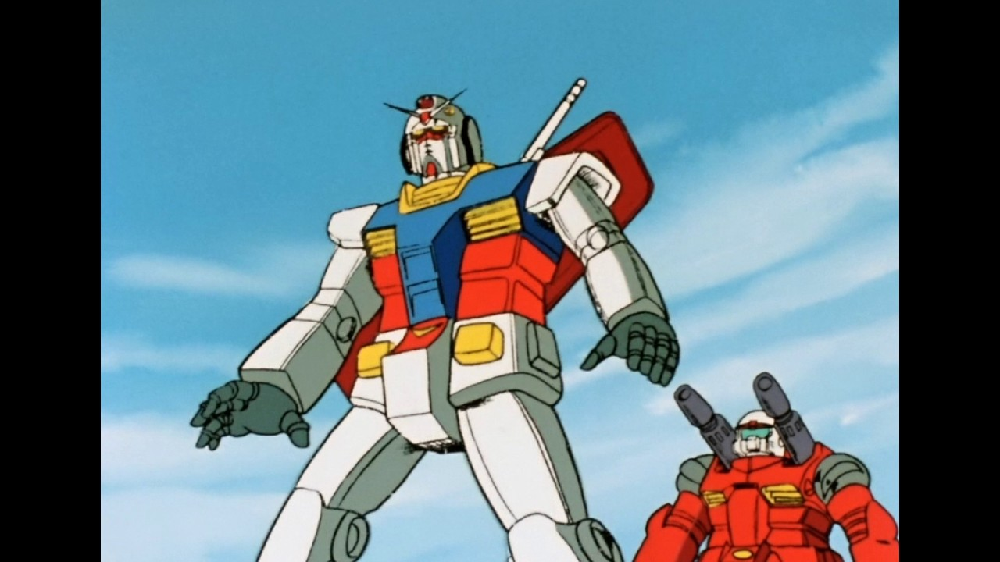

Hi nice to meet you!
This is gundam.
Our site is a place to group Gundam according to the type of Gundam and help you find the Gundam model you want.
Use two navigation bar ro find you want(Gundam!).
Main css was created by Mr.park and the contents were made by Mr.lee and the sub develope was progressed by Mr.Joe.
What is Gundam?

Gundam (Japanese: ガンダム Hepburn: Gandamu), also known as the Gundam Series (ガンダムシリーズ Gandamu Shirīzu), is a science fiction media franchise created by Sunrise that features giant robots (mecha) called mobil
bearing the name Gundam. It began on April 7, 1979 as Mobile Suit Gundam, a TV series that defined the real robot or "mecha" anime genreby featuring giant robots in a militaristic setting. The popularity of the ser
its merchandise spawned a franchise that includes televisionseries, OVAs, films, manga, novels and video games.
The Gundam franchise had grossed over $5 billion in retail sales by 2000. By 2014, annual revenue of the Gundam franchise reached ¥80 billion per year, ¥18.4 billion of which was retail sales of toys and hobby items. Gunpla(plastic Gundam models) make up 90 percent of the Japanese character plastic-model market. Academics in Japan have viewed the series as inspiration; in 2008, the virtual Gundam Academy was planned as the first academic institutionbased on an animated TV series.
If you want to know about a gundam series, Follow this!
Press one of the HG, MG, RG or PG models at the top of the navigation bar!
Then there will be another navigation bar with different types on the left!
Use it to find your Gundam model you want to find!
If you click on the photo, the related gundam mall will come out.
If you have any questions, please contact 010-XXXX-XXXX.
Thank you.